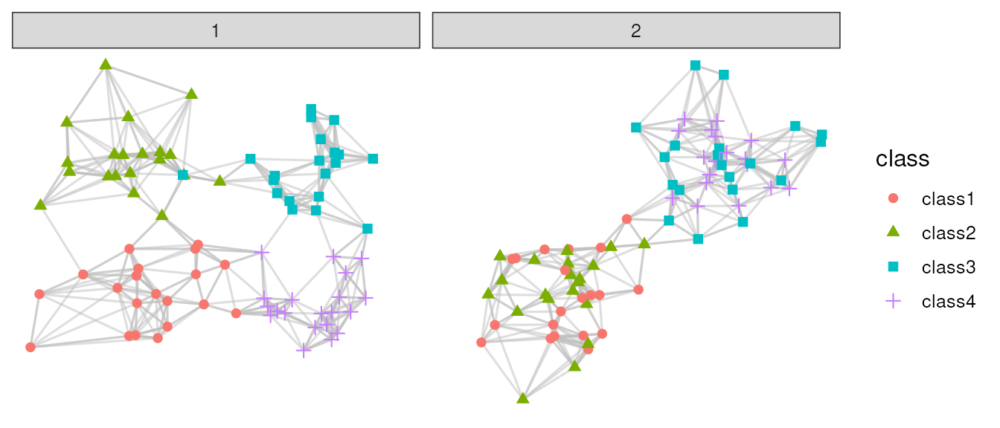

Introduction to `poem`
Siyuan Luo
Institute for Molecular Life Sciences, University of Zurich, Zurich, SwitzerlandDepartment of Health Sciences and Technology, ETH Zurich, Zurich, Switzerlandroseluosy@gmail.com
Pierre-Luc Germain
Institute for Molecular Life Sciences, University of Zurich, Zurich, SwitzerlandDepartment of Health Sciences and Technology, ETH Zurich, Zurich, Switzerland2025-04-14
Source:vignettes/poem.Rmd
poem.RmdInstallation & loading
if (!requireNamespace("BiocManager", quietly = TRUE))
install.packages("BiocManager")
BiocManager::install("poem")Introduction
What is this package for?
This package provides multiple approaches for comparing two partitions1 of the same dataset, and evaluating the alignment between a dataset’s embedding/graph representations and its partition.
Besides, this package further offers methods for comparing two fuzzy partitions2 as well as for comparing a hard partition with a fuzzy partition. This allows the evaluation of fuzzy partition results by assessing its agreement to a fuzzy or a hard ground-truth partition.
Finally, the package implements visualization and evaluation metrics tailored for domain detection in spatially-resolved -omics data. These include especially external evaluation metrics (i.e. based on a comparison to ground truth labels), but also internal metrics. For a detailed description on how to work with SpatialExperiment objects, we refer to another vignette of poem.
Main functions
The package poem includes many metrics to perform different kinds of evaluations, and these metrics can be retrieved via 6 main wrapper functions. Unless specified, “partition” means “hard” partition. They are:
-
getEmbeddingMetrics(): Metrics to compare an embedding of data points to a partition of these data points. -
getGraphMetrics(): Metrics to compare a graph (e.g. kNN/sNN) to a partition, where nodes in the graph are data points in the partition. -
getPartitionMetrics(): Metrics to compare two partitions of the same dataset. -
getfuzzyPartitionMetrics(): Metrics to compare two fuzzy partitions, or to compare between a fuzzy and a hard partition of the same dataset. -
getSpatialExternalMetrics(): External metrics for evaluating spatial clustering results in a spatial-aware fashion. For non-spatial-aware evaluation, one can directly usegetPartitionMetrics(). -
getSpatialInternalMetrics(): Internal metrics for evaluating spatial clustering results in a spatial-aware fashion.
There are 3 different levels where one can perform the above-mentioned evaluation: element-level, class-level, and dataset-level. Element-level evaluation reports metric values for each data point; Class-level evaluation reports metrics for each classes3 or clusters4; and dataset-level evaluation returns a single metric value for the whole dataset.
The following table illustrates available metrics at different evaluation levels, and the main functions used to retrieve them.
Getting started
Example data
To showcase the main functions, we will use some simulated datasets as examples in this vignette.
The two datasets, g1 and g2, both contain
80 data points with x and y coordinates and of
4 different classes.
data(toyExamples)
g1 <- toyExamples[toyExamples$graph=="graph1",]
g2 <- toyExamples[toyExamples$graph=="graph2",]
head(g1)
## graph x y class
## 641 graph1 -0.6290416 -0.487293 class1
## 642 graph1 -2.5646982 -1.742079 class1
## 643 graph1 -1.6368716 -1.911560 class1
## 644 graph1 -1.3671374 -2.120897 class1
## 645 graph1 -1.5957317 -3.194329 class1
## 646 graph1 -2.1061245 -1.388003 class1If we plot them out:
ggplot(rbind(g1,g2), aes(x,y,color=class, shape=class)) +
geom_point() +
facet_wrap(~graph) +
theme_bw()
Embedding evaluation
Let’s assume g1 and g2 contain two
different embeddings of the same set of objects. A “good” embedding
should put objects of the same class together, and objects of different
class apart. Since we know the ground-truth class of each object, one
can evaluation such “goodness” of an embedding by calculating embedding
evaluation metrics. One can calculate such metrics element-wise, for
each class/cluster, or for the whole dataset.
Element-level evaluation
For example, at the element level, one can calculate the Silhouette
Width by specifying level="element" and
metrics=c("SW"):
sw <- getEmbeddingMetrics(x=g1[,c("x","y")], labels=g1$class, metrics=c("SW"),
level="element")
head(sw)
## class SW
## 641 class1 0.2986628
## 642 class1 0.5818507
## 643 class1 0.6299871
## 644 class1 0.5867285
## 645 class1 0.5191290
## 646 class1 0.5679847The output will be a data.frame containing the metric
values for the specified level.
g1$sw <- getEmbeddingMetrics(x=g1[,c("x","y")], labels=g1$class,
metrics=c("SW"), level="element")$SW
g2$sw <- getEmbeddingMetrics(x=g2[,c("x","y")], labels=g2$class,
metrics=c("SW"), level="element")$SW
ggplot(rbind(g1,g2), aes(x, y, color=sw, shape=class)) +
geom_point() +
facet_wrap(~graph) +
theme_bw()
Class-level evaluation
One can also evaluate at each class level, by specifying
level="class". Check ?getEmbeddingMetrics to
see what are the allowed metrics at the class level. For example:
cl <- getEmbeddingMetrics(x=g1[,c("x","y")], labels=g1$class,
metrics=c("dbcv", "meanSW"), level="class")
head(cl)
## class meanSW dbcv
## 1 class1 0.4240817 -0.37367780
## 2 class2 0.4897828 -0.34617982
## 3 class3 0.5021555 0.07752233
## 4 class4 0.5957709 0.26757842
res1 <- getEmbeddingMetrics(x=g1[,c("x","y")], labels=g1$class,
metrics=c("dbcv", "meanSW"), level="class")
res2 <- getEmbeddingMetrics(x=g2[,c("x","y")], labels=g2$class,
metrics=c("dbcv", "meanSW"), level="class")
bind_rows(list(graph1=res1, graph2=res2), .id="graph") %>%
pivot_longer(cols=c("meanSW","dbcv"), names_to="metric",values_to="value") %>%
ggplot(aes(class, value, fill=graph, group=graph)) +
geom_bar(position = "dodge", stat = "identity") +
facet_wrap(~metric) +
theme_bw()
Dataset-level evaluation
Similarly, one can evaluate at the dataset level by specifying
level="dataset". For example:
getEmbeddingMetrics(x=g1[,c("x","y")], labels=g1$class, level="dataset",
metrics=c("meanSW", "meanClassSW", "pnSW", "minClassSW",
"cdbw", "cohesion", "compactness", "sep", "dbcv"))
## meanSW meanClassSW pnSW minClassSW cdbw cohesion compactness
## 1 0.5029477 0.5029477 0.0375 0.4240817 0.0553208 0.2732925 0.2800803
## sep dbcv
## 1 0.7227335 -0.09368922Graph evaluation
Instead of directly using the distances or densities in the embedding
space for evaluation, one may want to evaluate from a connectivity stand
point by looking at the graph structure constructed from the above
datasets. getGraphMetrics() can perform k nearest neighbor
(KNN) graph or shared nearest neighbor graph (SNN) construction from an
embedding and then apply graph-based evaluation metrics.
# Some functions for plotting
plotGraphs <- function(d, k=7){
gn <- dplyr::bind_rows(lapply(split(d[,-1],d$graph), FUN=function(d1){
nn <- emb2knn(as.matrix(d1[,c("x","y")]), k=k)
g <- poem:::.nn2graph(nn, labels=d1$class)
ggnetwork(g, layout=as.matrix(d1[,seq_len(2)]), scale=FALSE)
}), .id="graph")
ggplot(gn, aes(x = x, y = y, xend = xend, yend = yend)) + theme_blank() +
theme(legend.position = "right") + geom_edges(alpha=0.5, colour="grey") +
geom_nodes(aes(colour=class, shape=class), size=2) +
facet_wrap(~graph, nrow=1)
}For our examples g1 and g2, the constructed
graphs will look like:

Use ?getGraphMetrics() to check optional arguments for
KNN/SNN graph construction.
Similarly, level can be "element",
"class" or "dataset".
getGraphMetrics(x=g1[,c("x","y")], labels=g1$class, metrics=c("PWC","ISI"),
level="class", directed=FALSE, k=7, shared=FALSE)
## class PWC ISI
## class1 class1 0.05 1.186272
## class2 class2 0.10 1.224188
## class3 class3 0.05 1.149098
## class4 class4 0.05 1.251146
res1 <- getGraphMetrics(x=g1[,c("x","y")],
labels=g1$class,metrics=c("PWC","ISI"),
level="class", directed=FALSE, k=7, shared=FALSE)
res2 <- getGraphMetrics(x=g2[,c("x","y")], labels=g2$class,
metrics=c("PWC","ISI"), level="class",
directed=FALSE, k=7, shared=FALSE)
bind_rows(list(graph1=res1, graph2=res2), .id="graph") %>%
pivot_longer(cols=c("PWC","ISI"), names_to="metric",values_to="value") %>%
ggplot(aes(class, value, fill=graph, group=graph)) +
geom_bar(position = "dodge", stat = "identity") +
facet_wrap(~metric) +
theme_bw()
Alternatively, getGraphMetrics() can take an
igraph object as x, which enables the application
of the evaluation metrics to a general graph, or a list of nearest
neighbors as x, to accelerate the computation for large
datasets.
Partition evaluation
We construct SNN graph from g1 and g2 embeddings, and then apply Louvain algorithm to get partitions out of them.
k <- 7
r <- 0.5
snn1 <- emb2snn(as.matrix(g1[,c("x","y")]), k=k)
snn2 <- emb2snn(as.matrix(g2[,c("x","y")]), k=k)
g1$cluster <- factor(igraph::cluster_louvain(snn1, resolution = r)$membership)
g2$cluster <- factor(igraph::cluster_louvain(snn2, resolution = r)$membership)
ggplot(rbind(g1,g2), aes(x,y,color=cluster, shape=class)) +
geom_point() +
facet_wrap(~graph) +
theme_bw()
We then compare the predictions with the known labels using the partition metrics:
# for g1
getPartitionMetrics(true=g1$class, pred=g1$cluster, level="dataset",
metrics = c("RI", "WC", "WH", "ARI", "AWC", "AWH",
"FM", "AMI"))
## RI WC WH ARI AWC AWH FM AMI
## 1 0.9636076 0.925 0.9237845 0.9004285 0.9012088 0.8996496 0.9624922 0.8872892
# for g2
getPartitionMetrics(true=g2$class, pred=g2$cluster, level="dataset",
metrics = c("RI", "WC", "WH", "ARI", "AWC", "AWH",
"FM", "AMI"))
## RI WC WH ARI AWC AWH FM AMI
## 1 0.721519 0.95 0.4616368 0.4400954 0.9010025 0.2911552 0.6501669 0.4193846Note that for class-level metrics, some are reported per class, while some (specifically, “WH”, “AWH) are reported per cluster.
getPartitionMetrics(true=g1$class, pred=g2$cluster, level="class")
## WC AWC FM class WH AWH cluster
## 1 0.9 0.802005 0.6551724 class1 NA NA <NA>
## 2 0.9 0.802005 0.6551724 class2 NA NA <NA>
## 3 1.0 1.000000 0.6451613 class3 NA NA <NA>
## 4 1.0 1.000000 0.6451613 class4 NA NA <NA>
## 5 NA NA NA <NA> 0.4864865 0.3238739 1
## 6 NA NA NA <NA> 0.4413473 0.2644406 2Fuzzy partition evaluation
For comparing two fuzzy partitions or comparing a fuzzy partition to
a hard patition, one can use
getFuzzyPartitionMetrics().
The fuzzy reprensentation of a partion should look like the following, where each row is a data point, and the value is the class memberships to each class. Each row sums up to 1.
fuzzyTrue <- matrix(c(
0.95, 0.025, 0.025,
0.98, 0.01, 0.01,
0.96, 0.02, 0.02,
0.95, 0.04, 0.01,
0.95, 0.01, 0.04,
0.99, 0.005, 0.005,
0.025, 0.95, 0.025,
0.97, 0.02, 0.01,
0.025, 0.025, 0.95),
ncol = 3, byrow=TRUE)
# a hard truth:
hardTrue <- apply(fuzzyTrue,1,FUN=which.max)
# some predicted labels:
hardPred <- c(1,1,1,1,1,1,2,2,2)
getFuzzyPartitionMetrics(hardPred=hardPred, hardTrue=hardTrue,
fuzzyTrue=fuzzyTrue, nperms=3, level="class")
## fuzzyWC fuzzyAWC class fuzzyWH fuzzyAWH cluster
## 1 0.7195238 0.3542847 1 NA NA NA
## 2 1.0000000 NaN 2 NA NA NA
## 3 1.0000000 NaN 3 NA NA NA
## 4 NA NA NA 1.00000000 1.0000000 1
## 5 NA NA NA 0.06166667 -0.8064171 2By using the input hardPred, hardTrue,
fuzzyPred, fuzzyTrue, one can control whether
the fuzzy or hard version of the two partitions is used in comparison.
For example, when fuzzyTrue and fuzzyPred are
not NULL, metrics for comparing two fuzzy partitions will
be used.
Spatial clustering evaluation
Example data
We use another toy example dataset in the package,
sp_toys, to illustrate spatial clustering evaluation.
data(sp_toys)
s <- 3
st <- 1
p1 <- ggplot(sp_toys, aes(x, y,
color=label)) +
geom_point(size=s, alpha=0.5) + scale_y_reverse() + theme_bw() +
geom_point(shape = 1, size = s, stroke = st, aes(color=p1)) +
labs(x="",y="", title="P1")
p0 <- ggplot(sp_toys, aes(x, y,
color=label)) +
geom_point(size=s, alpha=0.5) + scale_y_reverse() + theme_bw() +
geom_point(shape = 1, size = s, stroke = st, aes(color=label)) +
labs(x="",y="", title="C")
p2 <- ggplot(sp_toys, aes(x, y,
color=label)) +
geom_point(size=s, alpha=0.5) + scale_y_reverse() + theme_bw() +
geom_point(shape = 1, size = s, stroke = st, aes(color=p2)) +
labs(x="",y="", title="P2")
plot_grid(p0 + theme(legend.position = "none",
plot.title = element_text(hjust = 0.5)),
p1 + theme(legend.position = "none",
plot.title = element_text(hjust = 0.5)),
p2 + theme(legend.position = "none",
plot.title = element_text(hjust = 0.5)), ncol = 3)
Here in C, the spots are colored by the ground-truth class. In P1 and P2, the color inside each spot is according to the ground-truth class, while the color of the border is according to clustering predictions. P1 and P2 misclassified the same amount of red spots into the blue cluster.
External metrics
Let’s quantify this by calculating external spatial metrics:
getSpatialExternalMetrics(true=sp_toys$label, pred=sp_toys$p1,
location=sp_toys[,c("x","y")], level="dataset",
metrics=c("nsARI","SpatialARI"),
fuzzy_true = TRUE, fuzzy_pred = FALSE)
## nsARI SpatialARI
## 1 0.7871135 0.7460029By specifying fuzzy_true and fuzzy_pred,
one can control whether the fuzzy or hard version of true
and pred is used in comparison for the
neighborhood-smoothed ARI (nsARI). If fuzzy_true or
fuzzy_pred is TRUE, the spatial neighborhood
information will be used to construct the fuzzy representation of the
class/cluster memberships.
getSpatialExternalMetrics(true=sp_toys$label, pred=sp_toys$p1,
location=sp_toys[,c("x","y")], level="class")
## nsWH nsAWH nsWC nsAWC class cluster
## 1 NA NA 0.8078698 0.5929504 1 NA
## 2 NA NA 1.0000000 1.0000000 2 NA
## 3 1.0000000 1.0000000 NA NA NA 1
## 4 0.8323893 0.6493279 NA NA NA 2
res1.1 <- getSpatialExternalMetrics(true=sp_toys$label, pred=sp_toys$p1,
location=sp_toys[,c("x","y")], level="dataset",
metrics=c("nsARI","SpatialARI"),
fuzzy_true = TRUE, fuzzy_pred = FALSE)
res2.1 <- getSpatialExternalMetrics(true=sp_toys$label, pred=sp_toys$p2,
location=sp_toys[,c("x","y")], level="dataset",
metrics=c("nsARI","SpatialARI"),
fuzzy_true = TRUE, fuzzy_pred = FALSE)
res1.2 <- getPartitionMetrics(true=sp_toys$label, pred=sp_toys$p1,
level="dataset", metrics=c("ARI"))
res2.2 <- getPartitionMetrics(true=sp_toys$label, pred=sp_toys$p2,
level="dataset", metrics=c("ARI"))
cbind(bind_rows(list(res1.1, res2.1), .id="P"),
bind_rows(list(res1.2, res2.2), .id="P")) %>%
pivot_longer(cols=c("nsARI", "SpatialARI", "ARI"),
names_to="metric", values_to="value") %>%
ggplot(aes(x=P, y=value, group=metric)) +
geom_point(size=3, aes(color=P)) +
facet_wrap(~metric) +
theme_bw() + labs(x="Prediction")
When the evaluation is non-spatial-aware, P1 and P2 get the same ARI score. However, with spatial-aware metrics like nsARI and SpatialARI, P2 gets a higher scores than P1.
Internal metrics
Last but not least, there are internal metrics for spatial clustering evaluation:
sp_toys$c_elsa <- getSpatialInternalMetrics(label=sp_toys$label,
location=sp_toys[,c("x","y")], level="element",
metrics=c("ELSA"))$ELSA
## the specified variable is considered as categorical...
sp_toys$p1_elsa <- getSpatialInternalMetrics(label=sp_toys$p1,
location=sp_toys[,c("x","y")], level="element",
metrics=c("ELSA"))$ELSA
## the specified variable is considered as categorical...
sp_toys$p2_elsa <- getSpatialInternalMetrics(label=sp_toys$p2,
location=sp_toys[,c("x","y")], level="element",
metrics=c("ELSA"))$ELSA
## the specified variable is considered as categorical...
s <- 3
st <- 1
p1 <- ggplot(sp_toys, aes(x, y,
color=p1_elsa)) +
geom_point(size=s, alpha=0.5) + scale_y_reverse() + theme_bw() +
labs(x="",y="", title="P1", color="ELSA") +
scico::scale_color_scico(palette = "roma", limits = c(0, 1), direction=-1)
p0 <- ggplot(sp_toys, aes(x, y,
color=c_elsa)) +
geom_point(size=s, alpha=0.5) + scale_y_reverse() + theme_bw() +
labs(x="",y="", title="C", color="ELSA") +
scico::scale_color_scico(palette = "roma", limits = c(0, 1), direction=-1)
p2 <- ggplot(sp_toys, aes(x, y,
color=p2_elsa)) +
geom_point(size=s, alpha=0.5) + scale_y_reverse() + theme_bw() +
labs(x="",y="", title="P2", color="ELSA") +
scico::scale_color_scico(palette = "roma", limits = c(0, 1), direction=-1)
plot_grid(p0 + theme(plot.title = element_text(hjust = 0.5)),
p1 + theme(plot.title = element_text(hjust = 0.5)),
p2 + theme(plot.title = element_text(hjust = 0.5)),
nrow=1, rel_width=c(1,1,1))
Session info
sessionInfo()
## R version 4.4.3 (2025-02-28)
## Platform: x86_64-pc-linux-gnu
## Running under: Ubuntu 22.04.5 LTS
##
## Matrix products: default
## BLAS: /usr/lib/x86_64-linux-gnu/blas/libblas.so.3.10.0
## LAPACK: /usr/lib/x86_64-linux-gnu/lapack/liblapack.so.3.10.0
##
## locale:
## [1] LC_CTYPE=en_US.UTF-8 LC_NUMERIC=C
## [3] LC_TIME=en_US.UTF-8 LC_COLLATE=en_US.UTF-8
## [5] LC_MONETARY=en_US.UTF-8 LC_MESSAGES=en_US.UTF-8
## [7] LC_PAPER=en_US.UTF-8 LC_NAME=C
## [9] LC_ADDRESS=C LC_TELEPHONE=C
## [11] LC_MEASUREMENT=en_US.UTF-8 LC_IDENTIFICATION=C
##
## time zone: Europe/Zurich
## tzcode source: system (glibc)
##
## attached base packages:
## [1] stats graphics grDevices utils datasets methods base
##
## other attached packages:
## [1] cowplot_1.1.3 igraph_2.1.1 ggnetwork_0.5.13 tidyr_1.3.1
## [5] dplyr_1.1.4 ggplot2_3.5.1 poem_0.99.17 BiocStyle_2.32.1
##
## loaded via a namespace (and not attached):
## [1] Rdpack_2.6.1 DBI_1.2.3
## [3] deldir_2.0-4 s2_1.1.7
## [5] rlang_1.1.5 magrittr_2.0.3
## [7] clue_0.3-66 matrixStats_1.3.0
## [9] e1071_1.7-9 compiler_4.4.3
## [11] systemfonts_1.1.0 vctrs_0.6.5
## [13] fclust_2.1.1.1 pkgconfig_2.0.3
## [15] SpatialExperiment_1.14.0 wk_0.9.4
## [17] crayon_1.5.3 fastmap_1.2.0
## [19] magick_2.8.4 XVector_0.44.0
## [21] labeling_0.4.3 rmarkdown_2.27
## [23] UCSC.utils_1.0.0 ragg_1.3.2
## [25] purrr_1.0.2 xfun_0.46
## [27] bluster_1.14.0 zlibbioc_1.50.0
## [29] cachem_1.1.0 GenomeInfoDb_1.40.1
## [31] jsonlite_1.8.8 highr_0.11
## [33] DelayedArray_0.30.1 scico_1.5.0
## [35] BiocParallel_1.38.0 pdist_1.2.1
## [37] terra_1.5-21 clevr_0.1.2
## [39] parallel_4.4.3 aricode_1.0.3
## [41] cluster_2.1.6 R6_2.6.1
## [43] bslib_0.8.0 boot_1.3-30
## [45] GenomicRanges_1.56.1 jquerylib_0.1.4
## [47] Rcpp_1.0.14 bookdown_0.40
## [49] SummarizedExperiment_1.34.0 knitr_1.48
## [51] IRanges_2.38.1 Matrix_1.7-0
## [53] tidyselect_1.2.1 rstudioapi_0.16.0
## [55] abind_1.4-5 yaml_2.3.10
## [57] codetools_0.2-20 lattice_0.22-6
## [59] tibble_3.2.1 withr_3.0.2
## [61] Biobase_2.64.0 evaluate_0.24.0
## [63] desc_1.4.3 sf_1.0-6
## [65] units_0.8-0 spData_2.3.3
## [67] proxy_0.4-27 elsa_1.1-28
## [69] pillar_1.10.1 BiocManager_1.30.23
## [71] MatrixGenerics_1.16.0 KernSmooth_2.23-24
## [73] DT_0.33 stats4_4.4.3
## [75] dbscan_1.2-0 generics_0.1.3
## [77] sp_2.1-4 mclustcomp_0.3.3
## [79] S4Vectors_0.42.1 munsell_0.5.1
## [81] scales_1.3.0 class_7.3-23
## [83] glue_1.8.0 tools_4.4.3
## [85] BiocNeighbors_1.22.0 fs_1.6.4
## [87] grid_4.4.3 spdep_1.3-6
## [89] crosstalk_1.2.1 rbibutils_2.3
## [91] colorspace_2.1-1 SingleCellExperiment_1.26.0
## [93] GenomeInfoDbData_1.2.12 raster_3.5-15
## [95] cli_3.6.4 textshaping_0.3.6
## [97] S4Arrays_1.4.1 gtable_0.3.5
## [99] sass_0.4.9 digest_0.6.37
## [101] BiocGenerics_0.50.0 classInt_0.4-10
## [103] SparseArray_1.4.8 farver_2.1.2
## [105] rjson_0.2.21 htmlwidgets_1.6.4
## [107] htmltools_0.5.8.1 pkgdown_2.1.1
## [109] lifecycle_1.0.4 httr_1.4.7
## [111] MASS_7.3-61